Event - MIX10
Event - MIX10
MIX is a gathering of developers, designers, UX experts and business professionals creating the most innovative and profitable consumer sites on the web. Sessions range from technical, code-based topics to expert advice on content strategy, usability and design.
The Tale of JavaScript. I Mean ECMAScript. [2010/03/16]The brief but puzzling story of the world's most misunderstood programming language and its unlikely rise to power, becoming both the world's most popular programming language and the world's least…
Keynote Day 1 [2010/03/16]Day 1 Keynote Featuring Scott Guthrie and Joe Belfiore
Keynote Day 2 [2010/03/16]Day 2 Keynote Featuring Scott Guthrie, Dean Hachamovitch, Bill Buxton and Doug Purdy
Internet Explorer Developer Tools [2010/03/07]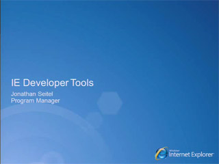Come learn about the developer tools built into Internet Explorer 8 and how they can help streamline and optimize your coding and testing efforts. We’ll also demonstrate the new features and…
In-Depth Look at Internet Explorer 9 [2010/03/07]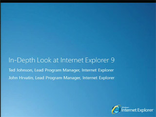Internet Explorer 9 and HTML5: Learn what’s coming in the Internet Explorer platform for Web programming, interoperability, graphics and performance by bringing the power of the PC hardware and…
HTML5: High-Performance Best Practices for Web Sites [2010/03/07]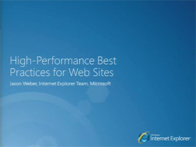Creating high performance Web sites and applications is crucial for every Web developer. Come learn ways you can make your sites faster in Internet Explorer and other browsers. We’ll describe what’s…
HTML5: Cross-Browser Best Practices [2010/03/07]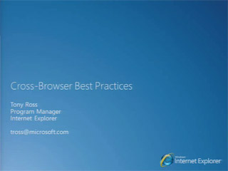Creating complex sites that work well across browsers is a constant challenge for developers. See how Internet Explorer 9 makes it easier to create Web sites using interoperable HTML, CSS, and…
Microsoft Silverlight "Media" : Moving at 60fps [2010/03/07]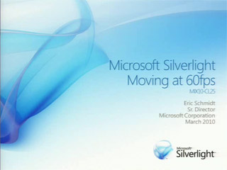From HD delivery to dynamic advertising models, Silverlight has rapidly become the industry leader for enabling rich, interactive media scenarios. This session will review the media focused…
Unit Testing Silverlight and Windows Phone Applications [2010/03/06]Learn how to create and maintain Silverlight and Windows Phone Series applications using the Silverlight Unit Test Framework. See what tools are available to easily validate controls and application…
Silverlight Performance on Windows Phone [2010/03/06]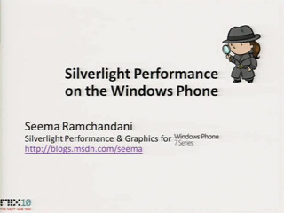Learn how to optimize your Silverlight code for Windows Phone. This session will discuss common bottlenecks using the graphics and managed stacks, and will highlight how to optimize startup and…
Introducing the Silverlight Rough Cut Editor [2010/03/06]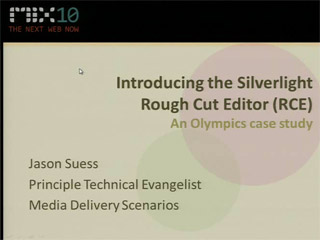This session will provide an overview and technical details of the Silverlight Rough Cut Editor. This open source tool provides real time editing for Silverlight Smooth Streaming content, and has…
Building PHP Applications using the Windows Azure Platform [2010/03/06]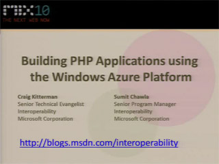The Windows Azure platform has been built from the ground up with interoperability in mind, supporting multiples languages and development tools to build applications which run on Windows Azure…
A Case Study: Rapid WordPress Design and Prototyping with Expression Web 3 [2010/03/06]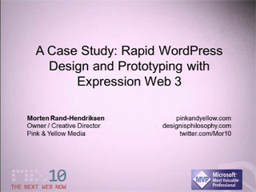Take a look behind the curtain of WordPress and its theme engine, and get a step-by-step road map of how to use Expression Web 3 with WordPress to take a boring standard blog theme and make into a…
The Type We Want [2010/03/02]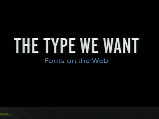After a slow evolution, the landscape for custom type on the web has been changing quickly. This session will cover the history of embedding fonts, diving into the options available to us today and…
Quickly Implementing New Cross-Browser Features with Ruby and Python [2010/03/02]Ruby and Python in the browser provide a powerful new way to quickly prototype and launch new features without requiring users to install multiple plugins or extensions. Learn how we used these…
Designing Rich Experiences for Data-Centric Applications [2010/03/02]Come hear how to design better experiences for data-centric applications from someone that has designed and developed many successful business applications using an array of UX technologies. Learn…
Building Innovative Windows Client Software [2010/03/02]What does Windows add to the Web 2.0 world? Can you reach and grow your audience with Windows applications? What are the best programming models to use for building innovative Windows applications?…
Building the eBay Simple Lister with Silverlight [2010/03/02]Come see how eBay is enhancing the listing experience for the occasional sellers with the eBay Simple Lister application. Learn how the application was built from concept to design to code using…
An Hour With Bill Buxton [2010/03/02]Come spend an intimate hour with Bill Buxton—one of the most influential designers in the world and the MIX10 keynote speaker—to discuss the role of human values, culture and technology in design.
Building Large-Scale, Data-Centric Applications with Silverlight [2010/03/02]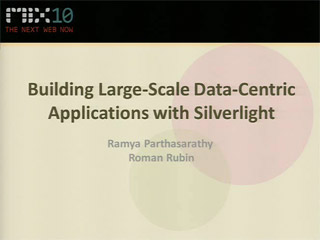Come learn how to use Silverlight for building compelling large-scale, data-centric applications. Hear a review of the approaches for architecting large-scale Silverlight applications, packaging and…
Adding the "Where" to the "When" of Social Applications [2010/03/02]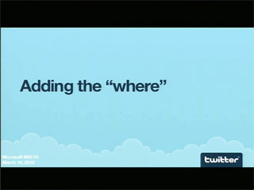Numerous devices and infrastructure services have the ability to expose location, but comprehending how to best make use of these technologies can be complex. Additionally, after the infrastructure…
The Microsoft Silverlight Analytics Framework [2010/02/17]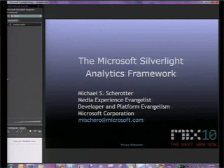Come hear about the Microsoft Silverlight Analytics Framework, which is a new extensible framework for integrating web analytics into Silverlight applications. See how it addresses the challenge of…
Unlocking Audio/Video Content with Speech Recognition [2010/02/16]Come hear how the ability to search within audio/video content can enhance web experiences in many ways such as better targeting of advertising, more efficient browsing of Audio/Video content, and…
Building Pivot Collections [2010/02/16]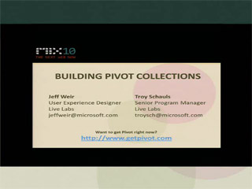It was announced Monday morning that Pivot will be launched as a Silverlight 4 control this summer. This technology, designed to visualize large collections of information, will be embeddable on any…
Reactive Extensions for JavaScript [2010/02/16]Come hear how the Reactive Extensions ("Rx") framework takes care of the difficult parts of asynchronous programming by viewing asynchronous computations as push-based collections. Instead of focusing…
Incarnate: Behind the Scenes [2010/02/16]A recent MIX Online lab, Incarnate is a service that finds your avatars around the web, so you don't have to upload a new one every time you join a service or leave a comment. Behind the scenes,…
Web Deployment Made Awesome: If You're Using XCopy, You're Doing It Wrong [2010/02/16]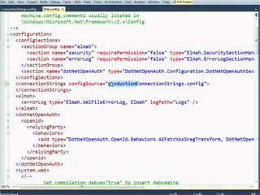If you typically deploy your web applications using Windows Explorer and Aero Snap, please stop. Come see a practical session on the new deployment goodness in Microsoft Visual Studio 2010 and .NET…
The Elephant in the Room [2010/02/16]Do you want to learn why the process of designing software always reveals our humanness - our biases and prejudices, quiet agendas, irrational actions, and diverse portfolio of imperfections - in full…
The Democratization of the Design Industry [2010/02/16]Come hear how the creative industry and its incumbents are under attack by a growing group of "underdogs" - nighttime freelancers, creative hobbyists, surprising talent from the developing world, and…
SVG: The Past, Present and Future of Vector Graphics for the Web [2010/02/16]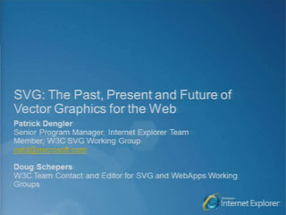Join Doug Schepers (W3C) and Patrick Dengler (Microsoft), as they take you through the past, present and future of SVG on the Web. These two members of the W3C SVG Working Group give a tour of SVG and…
[EX54]
Smooth Streaming Live in HD: 2010 Olympic Winter Games [2010/02/16]If you’re designing a live video experience, you’re need to be concerned with the realities of scale and monetization. Big events like the 2010 Vancouver Winter Olympics were produced to reach a large…
Storm Clouds: What to Consider About Privacy Before Writing a Line of Code [2010/02/16]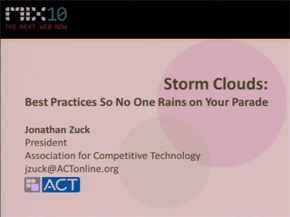Cloud computing is creating enormous opportunities for developers looking for a lower entry point and periodic scalability. Of course, maintaining personal data "in the cloud" raises issues of privacy…
Smooth Streaming Live in HD: From Camera to Screen [2010/02/16]The Olympics video team offers you a rare chance to witness an HD production set up, step-by-step, from scratch. Starting with an HD camera, we push the signal through an encoder with a tuned Smooth…
How jQuery Makes Hard Things Simple [2010/02/16]jQuery does a lot to make some really complicated JavaScript and DOM scripting simple. In this talk, learn some advanced jQuery techniques for simplifying your code. Additionally, look at some of the…
Opening Up Opportunity with Twitter [2010/02/16]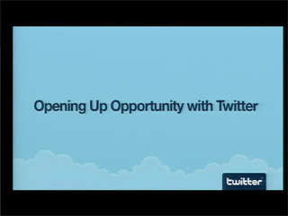As a radically open company, Twitter's success is dependent on the success of the developers in its ecosystem and the business partners who extend the Twitter experience across the Internet. Come hear…
Developing Multiplayer Games with Microsoft Silverlight 4 [2010/02/16]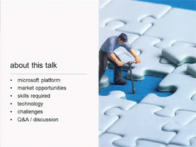Come learn from world-renowned interactive developer Grant Skinner about the opportunities, challenges, and processes for developing successful games using Silverlight. Hear about key Silverlight…
Practical Strategies for Debugging Cross-Browser Display Issues [2010/02/16]
Don't let cross-browser CSS display issues surprise you at the end of your next project. We explore a variety of tools and resources that can help you diagnose and correct cross-browser display issues…
Copyright: A Cloudy Subject [2010/02/16]Learn the rules for using content produced by others, particularly as web applications get richer and deep linking becomes more common. Get straight answers from a developer and not a lawyer to common…
Participating in the Web of Data with Open Standards [2010/02/16]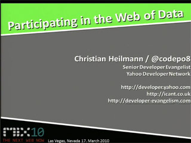Web development as we do it right now is on the way out. The future of the web is what its founders have planned a long time ago: loosely joined pieces of information for you to pick and choose and…
Accessing Data in a Microsoft .NET-Connected Web Application [2010/02/16]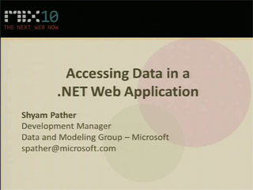Data is the lifeblood of any web service or application. In this talk we focus on how to interact with a variety of different data sources within your application, including XML and relational…
Accessing Web Services in Microsoft Silverlight [2010/02/16]This session outlines the use cases for the networking and web service technologies available in Silverlight, including Windows Communication Foundation (WCF) and WCF RIA Services. We then focus the…
[FT01]
Advanced Web Debugging with Fiddler [2010/02/10]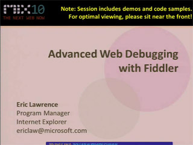Learn how teams around Microsoft and ISVs around the world use the Fiddler Web Debugger to find bugs, troubleshoot performance problems, and uncover security vulnerabilities in web applications. We…
Building Platforms and Applications for the Real-Time Web [2010/02/05]From news feeds to search, the web has become all about real-time access to news and other information as it happens. This panel discusses what it takes to build the platforms and user experiences…
Development and Debugging Tools for Building XNA Games for Windows Phone [2010/02/05]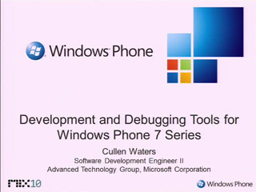This session covers tools available to the developer for building XNA games including debugging, emulation, and performance. Special emphasis is placed on best practices for managed code performance…
Distributing and Monetizing Windows Phone Applications and Games [2010/02/05]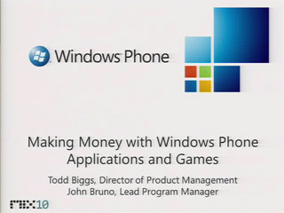Windows Phone Marketplace will revolutionize distribution of Windows Phone applications, games, and content, and is designed to solve the two largest problems of the Windows Phone consumer-focused…
Windows Phone Application Platform Architecture [2010/02/05]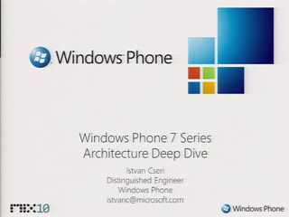Windows Phone 7 Series represents a significant change from the past. The entire stack, starting with the operating system, user experience, and the application platform have been engineered to build…
Windows Phone UI and Design Language [2010/02/05]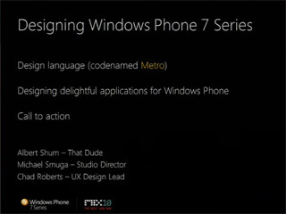Windows Phone constitutes a dramatic new user experience paradigm. This session will provide prescriptive guidance, tips, and techniques on how designers & developers can build beautiful, compelling…
Building Windows Phone Applications with Silverlight, Part 1 [2010/02/05]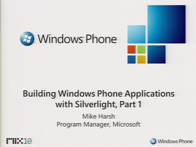Together with part 2, these sessions give an overview of the functionality for Silverlight applications that is unique to the Windows Phone application platform. Part 1 will cover new input paradigms…
Building Windows Phone Applications with Silverlight, Part 2 [2010/02/05]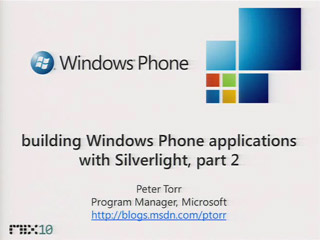Together with part 1, these sessions give an overview of the functionality for Silverlight applications that is unique to the Windows Phone application platform. Part 2 will cover the new application…
An Introduction to Developing Applications for Microsoft Silverlight [2010/02/05]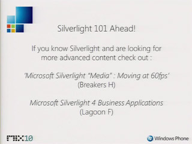New to Silverlight? This is the session for you. This session will cover: how to get started building your first application, tooling, extensibility and deployment. We’ll also highlight the…
Overview of the Windows Phone 7 Series Application Platform [2010/02/05]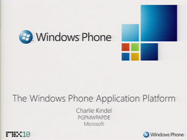The new Windows Phone is coming! Get a high-level overview of the new application platform and a complete picture of the developer story. Learn about the developer tools, the application frameworks,…
Designing and Developing for the Rich Mobile Web [2010/02/05]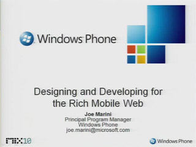The Mobile Web has been a long time in coming, and now that it’s here, it’s a force that you and your business can’t afford to ignore. What has made all of this possible is the combination of…
Building a High Performance 3D Game for Windows Phone [2010/02/05]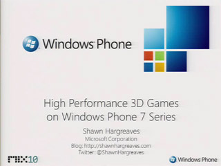This session will detail how to use XNA to develop 3D games for Windows Phone, with a special eye towards the special characteristics of Windows Phone application platform. Special attention will be…
Building Windows Phone Games [0:53:19] [2010/02/05]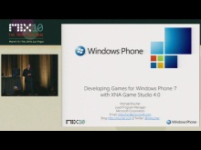With the release of Windows Phone, game developers will be able to create amazing content rapidly through the power of Silverlight and the XNA framework. This talk will outline the basic application…
Building Rich and Interactive User Experiences in SharePoint [2010/02/02]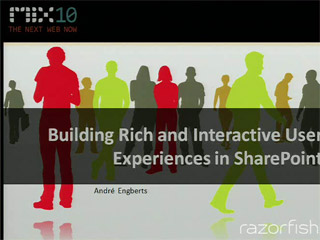Come hear how SharePoint offers many ways to build rich and personalized interactions using its user interface framework. Learn how to create rich experiences by extending SharePoint using…
Designing an Internet-Facing Web Site Using SharePoint 2010 [2010/02/02]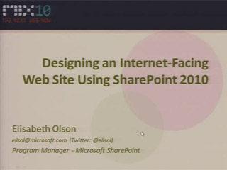Increasingly, companies are using SharePoint to build their Internet-facing properties. Examples of such sites are Ferrari.com and ConocoPhillips.com. In SharePoint 2010, there are many improvements…
The HaaHa Show: Microsoft ASP.NET MVC Security with Haack and Hanselman [2010/01/27]Join Phil Haack and Scott Hanselman for this dynamic and unusual security session. The HaaHa brothers take turns implementing features on an ASP.NET MVC website. Scott writes a feature, and Phil…
What's New in Microsoft ASP.NET MVC 2 [2010/01/27]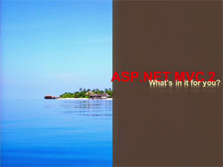Come see and hear about the latest innovations in ASP.NET MVC 2 and the tooling support in Microsoft Visual Studio 2008 and 2010. We introduce you to a range of productivity (and extensibility)…
Using Windows Identity Foundation for Creating Identity-Driven Experiences in Microsoft Silverlight [2010/01/27]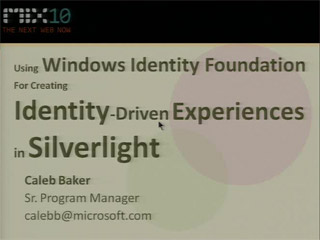Come learn how you can leverage Windows Identity Foundation to simplify access to your Silverlight applications and delight your users with custom-tailored experiences. Discover how you can enable…
Developing with WCF RIA Services Quickly and Effectively [1:07:48] [2010/01/27]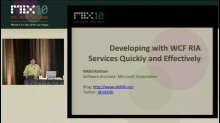Windows Communication Foundation (WCF) RIA Services provides an end-to-end framework for creating n-tier, data-driven applications on top of Microsoft Silverlight, ASP.NET, and WCF. This talk…
Using Ruby on Rails to Build Windows Azure Applications [2010/01/27]The Windows Azure platform has been designed to be open and interoperable with services that can be used with a variety of languages. In this session, learn how your Ruby on Rails applications can…
Using Storage in the Windows Azure Platform [2010/01/27]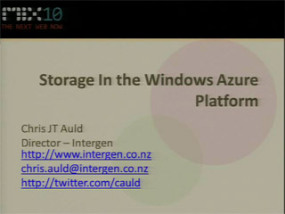Building big web apps requires unique approaches to storing data. In this session we share hard-won lessons from Azure early adopters on how they've combined Microsoft SQL Azure and Windows Azure…
Understanding the Model-View-ViewModel Pattern [2010/01/27]The Model-View-ViewModel pattern (also called MVVM) is a hot topic in today's Silverlight and WPF world. This pattern facilitates modern development techniques such as separation of concerns…
Stepping Outside the Browser with Microsoft Silverlight 4 [2010/01/27]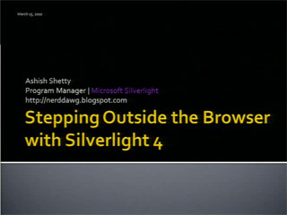You can do a lot with a Silverlight 3 out-of-browser application - so what more do you need? Maybe file system access, the ability to host HTML content, the ability to customize the application…
The OpenRasta Framework for Building RESTful Applications [2010/01/27]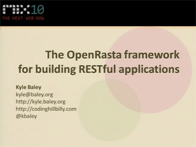So you've whet your appetite on MVC. Maybe built a website for your son's hockey league or your WoW guild. And you've started to see some cracks in the veneer. "Why do I need to create my own…
Total Experience: A Design Methodology for Agencies [2010/01/27]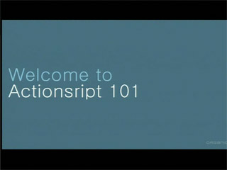Designers today have many exciting opportunities to envision new brand engagement strategies that help brands reach consumers in an increasingly diverse world. However, the design and creative process…
Software and Web Entrepreneurs: Go Big with BizSpark and WebsiteSpark [2010/01/27]Come and learn about BizSpark and WebsiteSpark from Microsoft. Discover how Microsoft provides startups and web professionals with the latest development tools, production server licenses and the…
Syncing Audio, Video and Animations in Microsoft Silverlight Applications [2010/01/27]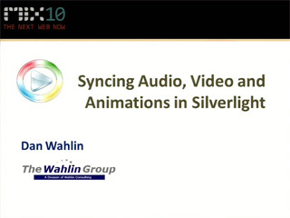Silverlight provides a robust framework for integrating audio, video and animations into applications but how do you keep them all in-sync? In this session Silverlight MVP Dan Wahlin discusses an…
Microsoft Silverlight and Windows Azure: A Match Made for the Web [2010/01/27]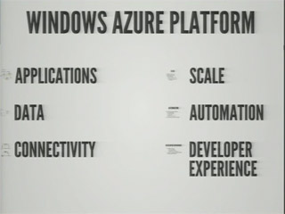By combining the rich user experience with Silverlight with the flexibility and scalability of Windows Azure compute and storage, you can build some incredible end-to-end web applications. In this…
Microsoft Silverlight 4 Overview: What's in Store for Silverlight 4? [2010/01/27]Are you looking for ways to build seamless, rich web experiences and easy-to-deploy line-of-business applications? If so, come see an overview of the new features and updates included in the upcoming…
Microsoft Silverlight 4 Business Applications [2010/01/27]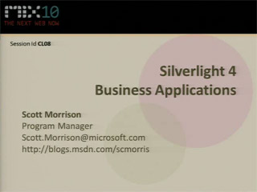Silverlight 4 makes building line of business applications easier than ever. Continuing the overview of Silverlight 4, this session focuses on new business-oriented features including…
Search Engine Optimization for Microsoft Silverlight [2010/01/27]Search engines are the primary entry point into the web for millions of users on the internet and increasingly in corporate intranets as well. Come learn how to unlock the valuable content in your…
Securing Microsoft Silverlight Applications [2010/01/27]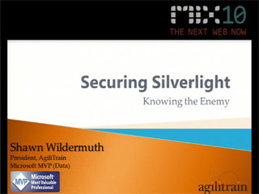Come hear how to protect Silverlight applications from common threats including securing your application from intruders, eavesdroppers and users as well as protecting your code, your data and your…
Pumping "Iron" on the Web: IronRuby and IronPython [2010/01/27]
Come learn how to use IronRuby and IronPython on the web, be it on the server with Microsoft ASP.NET MVC to simply the writing of your controllers and views, or on the client with Microsoft…
Tips and Tricks for Making Web Forms Shine with Microsoft ASP.NET 4 [2010/01/27]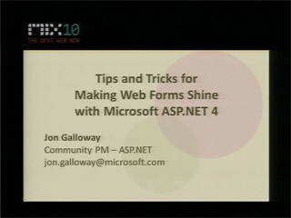Learn how Web Forms continue to evolve in ASP.NET 4, and how they can be used to rapidly build rich and highly performing applications. We cover some great tips and tricks to improve your Web Forms…
Principles of Microsoft Silverlight Graphics and Animation [2010/01/27]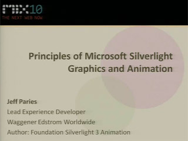Come and learn how to breathe life into your designs by learning the fundamentals of Silverlight graphics and animation. We take a look at the types of graphical assets Silverlight and Microsoft…
Microsoft Surface Goes Social: Research Project at the University of Linz [2010/01/27]Want to see how Surface can be combined with location-based services and social software? Attend this session to see how a research project team at the University of Linz, Austria succeeded in…
Microsoft Silverlight Optimization and Extensibility with MEF [2010/01/27]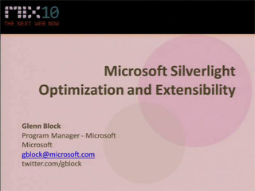Wouldn't it be nice if your team could add new features to your applications without all the headache they have to deal with today? With the Managed Extensiblity Framework (MEF) in 4.0 you can bolt…
Microsoft Project Code Name "Dallas": Data For Your Apps [2010/01/27]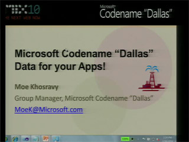“Dallas” enables developers to consume premium commercial and public domain data to power consumer and business apps on any platform or device. Do you need mapping or government data? These…
OData: There's a Feed for That [2010/01/27]There is no shortage of valuable data being generated by applications, reports, tools, websites, etc. Unfortunately, this leaves many of us wishing we could programmatically access the data and logic…
Lap around the Windows Azure Platform [2010/01/27]The Windows Azure platform provides a comprehensive set of services for building and running scalable applications targeted at the cloud. In this session we go on a coding tour of the Windows Azure…
IronRuby for the .NET Developer [2010/01/27]Have you heard of Ruby? It's an expressive, malleable, and fun language you can use in any Microsoft .NET-connected application. In this session we look at using IronRuby and the DLR to extend…
Implementing OData: How to Create a Feed for That [2010/01/27]Data has become a first-class element of the web. The Open Data Protocol (OData) applies web technologies such as HTTP, AtomPub and JSON to enable a wide range of data sources to be exposed on the web…
Improving the Usability and Security of OpenID [2010/01/27]OpenID is gaining popularity as an Internet identity system. Nonetheless, it is widely recognized that both usability and security issues are limiting the adoption and applicability of OpenID as it…
Improving Software Quality for the Modern Web [2010/01/27]In this session, see different testing techniques and tools for manual, exploratory, performance, and scale testing your web application. We also look at testing in production and how to work testing…
Great User Experiences: Seamlessly Blending Technology and Design [2010/01/27]The best solutions make maximum use of innovative technologies to achieve beautiful and unexpected results. However, they do not do this in an obvious and arbitrary way, with a big signpost attached…
Flash Skills Applied to Microsoft Silverlight Design and Development [2010/01/27]If you know how to design and develop Flash applications, you are more than half the way there to creating Silverlight applications. Similar languages, graphic and animation features and skinnable…
Driving Experiences via Services Using the Microsoft .NET Framework [2010/01/27]Windows Communication Foundation 4 (WCF) provides a coherent and unified services strategy for .NET. In this session, we present how .NET developers can reuse their WCF skills to take advantage of the…
From Comp to Code: A Design Communion [2010/01/27]Translating comps into code can be a painful and unremitting process. Learn how to develop a personalized, systematic approach to the continuous give-and-take between static comps and interactive…
Design the Ordinary, Like the Fixie [2010/01/27]This presentation is a study in the simplest of objects, their usefulness, and how they become part of our culture. It relates to web design and our tendency to overcomplicate, to play drum solos when…
Developing Natural User Interfaces with Microsoft Silverlight and WPF 4 Touch [2010/01/27]The Natural User Interface (NUI) is the next revolution of human-computer interaction. Microsoft Surface has shown the potential of multi-touch NUIs to uniquely engage users, and multi-touch tablets…
Designing and Delivering Scalable and Resilient Web Services [2010/01/27]The distributed in-memory caching capabilities of Windows Server AppFabric will change how you think about scaling your Microsoft .NET-connected applications. Come learn how the distributed nature of…
Do You Speak My Language? Microsoft Translator and the Power of Collaboration [2010/01/27]Super charge your websites and applications with the latest in translation technology using Microsoft Translator. Be the first to hear about how you can harness the power of the machine and your…
Building Web Applications with Windows Azure Storage [2010/01/27]Windows Azure provides a highly available and massively scalable cloud storage service. In this session, learn how to create and access the different types of Windows Azure storage including blobs,…
Deep Dive into Orchard Extensibility for CMS Developers [2010/01/27]Orchard is a new open source platform in Microsoft ASP.NET that you can use to build applications. We take a deep dive together into the architecture of an Orchard CMS application. We discover how…
Debugging Microsoft Silverlight Applications [2010/01/27]Building Silverlight apps is one thing, but what happens when you get stuck? That's where debugging comes into the picture. In this mini-talk, Shawn shows you how to do simple debugging of Silverlight…
Creating Effective Info Viz in Microsoft Silverlight [2010/01/27]So much information and so little time. Matthias Shapiro, contributing author for "Beautiful Visualization", talks about how to create information visualizations in Silverlight that bring both beauty…
Connecting Your Applications in the Cloud with Windows Azure AppFabric [2010/01/27]In this session, learn about the new features we're enabling with Windows Azure AppFabric to build rich, connected web applications. Today, Windows Azure AppFabric allows connecting service…
Building Great Standards-Based Websites for the Big Wide World with Microsoft ASP.NET 4 [2010/01/27]In this session, two ASP.NET MVPs share their experiences from building Australia's largest e-commerce site with ASP.NET Web Forms. They show you how to be a good web citizen by covering standards…
Building Offline Web Apps Using Microsoft Sync Framework [2010/01/27]Come learn about offline web applications and how they can provide a better experience to your users. Windows Azure, Microsoft SQL Azure, and Sync Framework are core technologies that enable web…
Building Finance Applications with Microsoft Silverlight 4 [2010/01/27]Sina Finance is the leading finance channel in China with 80 million users. Sina Finance's SilverPulse is a Silverlight 4-based application with cutting edge features in finance information…
Building Web Applications with Microsoft SQL Azure [2010/01/27]SQL Azure provides a highly available and scalable relational database engine in the cloud. In this demo-intensive and interactive session, learn how to quickly build web applications with SQL Azure…
Building and Deploying Windows Azure-Based Applications with Microsoft Visual Studio 2010 [2010/01/27]Visual Studio makes it easy to quickly build web applications for the Windows Azure Platform by allowing you to leverage your existing skills as a .NET web developer. In this session, see how to use…
Building a Next-Generation Web Application with Microsoft ASP.NET MVC 2 and jQuery [2010/01/27]ASP.NET MVC is a great foundation for building AJAX-driven web applications. Come hear a talk about building Agile Zen, a lean project management application. Learn how easy it is to make ASP.NET MVC…
Building Facebook Apps with Microsoft .NET and Deploying to Windows Azure [2010/01/27]There are so many ways to develop Facebook apps now in .NET. Come and learn how to build Facebook applications with the Facebook Developer Toolkit. Walk through several real-world Facebook web apps in…
Building an Accessible Microsoft Silverlight Experience [2010/01/27]Wondering how to build an accessible Silverlight application? Curious about support for accessibility in Silverlight? Join us as we dig into Silverlight and steps you can take to provide an accessible…
Build Your Own MVVM Framework [2010/01/27]You've heard a lot about Model-View-ViewModel (MVVM), but you've struggled to see how it can help you in your day-to-day work. Or, you're experienced at implementing MVVM, but looking for some ways to…
Six Things Every jQuery Developer Must Know [2010/01/27]This seminar provides an overview of several in-depth concepts that developers need to learn to bring their jQuery development to the next level. We review six things that you should know, such as:…
Beyond File | New Company: From Cheesy Sample to Social Platform [0:56:58] [2010/01/27]The web has changed and there's a new way of thinking about your applications. You can't just write some HTML and CSS anymore and expect to be the next Twitter. Hear how to make your site socially…
Changing our Game an Introduction to Windows Phone 7 Series [2010/01/20]
Major changes are coming to Windows Phone! This session goes in-depth on the design and features of Windows Phone and gives a comprehensive picture of what’s coming in this exciting new release.
[WKSP08]
Treat Your Content Right [2009/12/08]Most the time, designers don’t publish napkin sketches as final designs. But the same is not true of content. We regularly cram last-minute, sketchy content into our otherwise thoughtfully planned…
Designing Corporate Web Sites using SharePoint 2010 [2009/12/08]SharePoint is more commonly being used in the enterprise to manage many different types of activities. Often the design and deployment of these sites require designers to work closely with developers.…
Touch in Public: Multi-touch Interaction Design for Kiosks and Architectural Experiences [0:52:46] [2009/12/08]Multi-touch capabilities in Windows 7 have a vast array of possible applications. However, the design considerations for creating desktop applications that utilize these capabilities are somewhat…
The Mono Project [2009/12/08]Mono is a free and open source implementation of .NET that runs on Windows, Unix, and Macintosh. In more than 5 years since the first version of Mono was released, the Mono project has continued to…
The Laws of User Experience [2009/12/08]Whether you want to sell more software, improve employee efficiency, enhance brand strength or increase ad revenue, great user experiences (UX) better play a large role in your business strategy. In…
Service Design Goes Social [2009/12/08]People participating in service - whether providers, consumers, or others actively involved - are actually designing as they participate in a service. The service designer's role has grown from one of…
The Art, Technology and Science of Reading [2009/12/08]Are serif fonts more readable than sans serif fonts? Does grey text on a grey background cause eye fatigue? Can you read jmubeld wodrs just as fast as regular words? Learn about the latest research…
[WKSP05]
Running with Wireframes: Taking Information Architecture (IA) into Design [2009/12/08]The UX/IA process often feels walled-off from the design phase of web projects. Many times, wireframing and designing follow a disjointed and awkward workflow with much getting lost in the…
Peanut Butter and Jelly: Putting 'Content Management' Back into Context [2009/12/08]Find out why digital agencies are content domain experts and how a surprisingly simple content approach can help leading brands break out of the clutter and avoid the short hop from standardization to…
Modern Web Form Design [2009/12/08]The web has been transformed by the recent proliferation of rich interactions and applications. But the workhorses of the online world, web forms, have been slow to evolve with these changes. As…
Prototyping Rich Microsoft Silverlight Applications with Expression SketchFlow [2009/12/08]SketchFlow is the prototyping environment in Expression Blend. See how to use SketchFlow to collaboratively design, evolve, explore and review user experiences and interactive content.
Robots at MySpace: Massive Scaling a .NET Website with the Microsoft Robotic Studio [2009/12/08]MySpace, the largest .NET website in the world found that they could effectively scale their messaging infrastructure in their middle tier using the Concurrency and Coordination Runtime, a component…
Dynamic Layout and Transitions for Microsoft Silverlight 4 with Microsoft Expression Blend [2009/12/08]Learn to create applications that change layout and visual appearance using smooth, dynamic and visually rich transitions without writing code. Come see new features in Expression Blend that raise the…
[WKSP01]
Lifecycle of a Wireframe [2009/12/08]Dive deep into the process used to create wireframes, a key deliverable for user experience designers. Hear about the principles that guide this process, how to create great wireframes (all the way…
[WKSP07]
[WKSP03]
[WKSP02]
Designing Bing: Heart and Science [2009/12/08]Come hear how Bing is evolving search beyond a simple text box with "10 blue links" to a "decision engine". Learn how web designers and developers can benifit from the lessons learned creating the…
10 Ways to Attack a Design Problem and Come Out Winning [2009/12/08]See the design process in action as we walk through the creation of two (or three) apps from beginning to end. We’ll start with design requirements and talk about finding inspiration. We’ll show you…
[CL05]
[WKSP06]
Authoring for Windows Phone, Silverlight 4 and WPF 4 with Expression Blend [2009/12/08]Explore how Expression Blend lets you design and build rich, vibrant Windows Phone, Silverlight 4 and WPF 4 applications. Take advantage of a host of new platform and tools capabilities to produce…
Cloud Computing Economies of Scale [2009/12/08]High-scale cloud services provide economies of scale of five to ten times over small-scale deployments, and are becoming a large part of both enterprise information processing and consumer services.…
Creating Great Experiences through Collaboration [2009/12/08]For too long, the interactive industry has relied a few key individuals who embody the best qualities and skills of both a designer and a developer. We can no longer base our business on the ability…
[WKSP04]